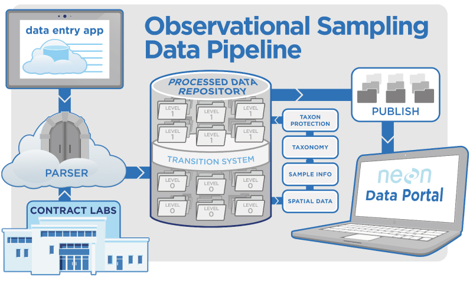

Executive Summary
In June 2026, Gartner pulled together 107 intermediate and advanced agentic AI cases and analyzed them side by side. The report's question is a simple one: which agents actually make money? The answer split cleanly. Only six cases reported results in the millions of dollars, and those six shared a single trait. Instead of suggesting something and stopping there, they carried out real work inside enterprise systems themselves.
The clearest evidence is Kodiak Gas Services. A single agent that orders and returns parts on behalf of people generated $3 million a year in value and handed back 90,000 hours to 800 field technicians. Had that agent merely told them "you should order this part," the technicians would still have had to log into the system themselves, and those 90,000 hours would have gone nowhere. What made the difference wasn't a smarter model — it was the authority to reach into the system and finish the order.
This piece starts from Gartner's three sorting axes, follows the ROI mechanics of action-taking agents through two cases, and closes by asking why the floor beneath that execution is data quality. To state the conclusion up front: for an agent to act, the system has to accept its command, and for the system to accept it, the data has to be trustworthy.
Key figures
Four numbers compress the tension in this analysis. The two on the left are what execution produced; the two on the right are why those results stayed rare. The last figure in particular follows us through the whole piece, because the reason only six of 107 cases cleared a million dollars is bound up with the fact that more than half of enterprises name data quality as their biggest barrier.
$3M
Kodiak annual ROI
Yearly value from an agent that executed parts ordering and returns directly
90,000 hrs
Returned to technicians
Time once lost to parts lookups, handed back to 800 field staff
6 / 107
Million-dollar results
Cases reporting multimillion-dollar outcomes — all of them action-taking
52%
Data quality as top barrier
Enterprises naming data quality as the biggest obstacle to agentic AI deployment
The Three Buckets Gartner Sorted 107 Cases Into
Expectations around agentic AI are already inflated into numbers. Gartner expects the share of enterprise apps embedding task-specific AI agents to climb from under 5% in 2025 to 40% by the end of 2026. Yet the same firm issued a parallel warning: more than 40% of agentic AI projects will be canceled by 2027. With expectation and failure rate spiking together, the weight of this report lies in exactly this — it brings 107 cases that actually made money into one place, showing what separates success from cancellation through measurement rather than guesswork.
Gartner's Robert Hetu and Reuben Harwood didn't simply list the 107 cases. They first sorted them into three buckets. The first is workflow automation, where an agent walks through — or walks faster through — a process a person used to handle by hand. The second is data synthesis, where data scattered across multiple sources is gathered and refined into a new result. The third is productivity, where both customer-facing touchpoints and internal operations are made more efficient at once.
Within each bucket, cases split again into intermediate and advanced. Three overlapping criteria draw the line: how complex the work is, how much the agent decides on its own, and how deeply it reaches into enterprise systems. That third criterion connects straight to this piece's theme, because the deeper an agent reaches into the system, the more it finishes work rather than just reporting on it.
What's striking is that the six cases with multimillion-dollar results weren't clustered in one bucket. They straddled workflow automation and productivity alike, which means the sorting axes didn't determine ROI. So what did? The common factor the report keeps returning to wasn't the category — it was the nature of the action. Does it advise, or does it execute?
The highest-ROI agents don't stop at producing an answer. They place an order in the inventory system, process a return, analyze a failure in the development pipeline and follow it through to a fix. In Gartner's own framing, the common factor behind financial performance wasn't a better model but "the ability to actually take action inside enterprise systems."
Advice Alone Would Never Have Returned 90,000 Hours
Kodiak Gas Services operates 4.5 million horsepower of natural-gas compression equipment across the United States. Eight hundred field technicians tend that fleet, and their days carried a hidden leak of time: finding parts, checking inventory, writing purchase orders, returning parts that arrived wrong. Not the time spent fixing equipment, but the administration around parts — a steady drip draining out of every day.
The solution Kodiak built on top of IFS Loops' Agent Studio was an agent named the Material Replenisher Digital Worker. The way it works is as plain as a conversation. A technician says in natural language which part they need, and the agent goes straight into the materials system to check inventory, generate the order, and — when needed — process the return. The crux is in that last verb. The agent "processes" it.
That single hinge split the outcome. After deployment, the value Kodiak reported was $3 million a year, plus 90,000 hours handed back to technicians. What if the same agent had merely recommended, "It would be a good idea to order this part"? The technician would have taken that advice, logged back into the materials system, and pressed the same order through the same screen by hand. Advice is kind, but it doesn't return time. What created those 90,000 hours wasn't recommendation — it was execution.
Execution requires trust, because an agent that places a wrong order on its own leaks money. The part IFS Loops' Agent Studio takes on is precisely that apparatus of trust. Guardrails that bound what the agent may do, audit logs that trace what it did, and a framework that manages the agent's lifecycle have to be in place before an enterprise will hand an agent the authority to touch its systems. Action-taking ROI doesn't come from boldness — it comes only on top of the governance that can carry that boldness.
How Five Agents Cleared the Developer Queue
The second case is the financial firm Northwestern Mutual. Its problem was the ordinary kind any large organization has: the same questions kept landing in the internal developer support channel, and even answers that a quick search through the docs would surface still pulled a person in each time. Worse, when the responsible engineer was off the clock, replies lagged by hours. It was a structure in which simple questions ate away at the time of skilled engineers.
The notable design choice was that they didn't hand everything to one giant agent. Instead, they stood up five specialized agents with narrowly divided responsibilities: one for documentation, one for user management, one for the code repository, one for analyzing pipeline failures, and one for evaluating the quality of responses. The narrower each role's boundary, the easier each agent's behavior is to predict and debug.
The technical foundation wove a message queue (SQS), a datastore (DynamoDB), and Python Lambda functions on top of Amazon Bedrock Agents. As befits a financial firm in a regulated industry, the compliance design is sharp as well: every automated action is gated behind the user's explicit consent, and every action is logged without exception. The agent acts on its own, yet what it did can always be traced back.
The timeline is impressive too. They started a pilot in June and pushed it to production in September — a live service in three months. The upshot is that repetitive questions get fielded by agents in minutes, and engineers spend their time on genuinely complex problems. But there is one more lesson written plainly into this case: without well-curated internal documentation, the knowledge-base agent would have been useless. To put it in the familiar phrase, garbage in, garbage out.
That five agents with clear responsibilities proved more stable than one do-it-all agent, and that the reason those five could turn answers into action was curated documentation. This case is a textbook in multi-agent design and, at the same time, evidence that data quality is a precondition for ROI.
LLMs Weren't Required — So Why Name the Model?
One thing the report nails down with surprising clarity: large language models are not a required component of agentic AI. There are agents that handle work autonomously enough with rule-based logic, probabilistic models, or plain old RPA alone. "Agentic" does not automatically mean "uses an LLM."
And yet many of the 107 cases went out of their way to specify which model they used. The reason is that models are clearly good at certain things. Where the work involves understanding a technician's natural-language request, pulling context out of unstructured documents, or walking through multi-step reasoning such as the root cause of a pipeline failure, the model's role grows. It fills in the territory that's hard to spell out exhaustively in rules.
The roster of named models didn't lean to one corner either. Each company chose for different reasons.
| Model | Provider | Why companies chose it |
|---|---|---|
| QWEN-2.5 | Alibaba | Open source, cost advantage, fit for Asian markets |
| Claude | Anthropic | Coding and analysis, long context, regulated environments |
| BERT · Gemini | Language understanding and writing, Google Cloud integration | |
| Llama | Meta | On-prem / VPC deployment, privacy-regulated enterprises |
| GPT-4 | OpenAI | General-purpose reasoning, Azure integration |
The very fact that the list is scattered is itself the message. The reality of 2026 isn't a game of picking the one right model, but one of fitting the right model to each job — this model for coding, that one for writing, yet another routed to cost-sensitive bulk processing. As LLM API prices have fallen steeply over the past year, the barrier to entry for these combinations has dropped with them.
Still, model selection is only the starting line of ROI, not the finish. Whatever model you attach, if the data it receives is shaky, the agent's judgment is shaky too. That the time spent inspecting a data pipeline sits closer to ROI than the time spent comparing model catalogs is the subject of the next section.
The Floor Beneath Execution: Data Quality
For an agent to execute, the system has to accept its command. For the system to accept the command, the data inside it has to be accurate. This chain looks too obvious to mention, yet in practice it's the link that breaks most often. Gartner reports that enterprises name data quality as the single biggest barrier to agentic AI deployment — more than half, 52%, answered that way.

The numbers go further. A large share of projects that start from data not yet cleaned into AI-ready shape are scrapped before they ever generate business value. Pick apart the failed AI initiatives and the model itself is the cause in only a minority of cases; the rest come down to strategy, governance, and data architecture. In other words, failures that get solved by swapping the model are far rarer than ones that require changing the data and the structure.
The structural problem is especially fatal to agents. Much enterprise data still sits in a batch architecture processed in daily or hourly bundles, while an agent decides what to execute by looking at this moment's inventory and state. An agent that places today's order against yesterday's stock loses trust. One analysis points out that a substantial part of the agentic AI ROI gap stems precisely from this mismatch between batch architecture and real-time demand.
That gap also shows up as the distance between adoption rate and outcome rate. A majority of enterprises have adopted AI in some form, yet the share that can demonstrate ROI worth calling transformative stays in the single digits. The ones that have taken root, by contrast, report returns several times their investment. Much of why the same technology produces results this far apart lies not in the superiority of the model but in the state of the data it stands on.
5.1What the Successful Deployments Had in Common
Conversely, the deployments that delivered results shared a similar foundation. It comes down to three things.
- • The data was in order before the agent — the parts data an order is placed against, and the internal documents an answer is pulled from, were in a trustworthy state first.
- • The use case and baseline were clear — what to reduce and what to increase, with a measurable baseline set in advance.
- • Governance wasn't bolted on later — guardrails and audit logs were built in from the design stage, securing trust in execution.
Kodiak's $3 million was possible because the inventory, specs, and prices of its parts were accurately structured, and Northwestern Mutual's minute-level responses were possible because a curated internal-document database existed. Gather the two cases into one sentence and it reads like this: the ROI of action-taking agents comes not from the model but from the data. That is the common condition flowing beneath the surface of all 107 cases.
Editor's Note
The conclusion the 107 cases point to gathers into one. For an agent to execute, the system has to accept its command, and for the system to accept it, the data has to be trustworthy. Gartner's 52%, and the statistics on scrapped projects, all face the same direction. What enterprises whose deployments fail have in common isn't "we picked the wrong model" but "we had no data to hold up the execution."
So before deciding what to hand an agent, the question to ask isn't the model catalog — it's the data. Is the inventory in our systems, the documents, the provenance, accurate enough right now for an agent to trust and act on? The reason Pebblous has focused on making the provenance and quality of data verifiable touches this very question. The starting point of ROI isn't a smarter agent, but data solid enough for that agent to stand on.
References
Primary report · official announcements
- 1.Hetu, R., & Harwood, R. (2026, June 16). Learn From 107 Agentic AI Case Examples in 8 Minutes (ID G00856491). Gartner.
- 2.IFS. (2026, April 23). IFS Loops Launches Agent Studio. PR Newswire. prnewswire.com
- 3.Gartner. (2025, June 25). Gartner Predicts Over 40% of Agentic AI Projects Will Be Canceled by End of 2027. Gartner Newsroom. gartner.com
- 4.Gartner. (2025, August 26). Gartner Predicts 40% of Enterprise Apps Will Feature Task-Specific AI Agents by 2026. Gartner Newsroom. gartner.com
Cases · industry analysis
- 5.ZenML. (2026). Multi-Agent GenAI System for Developer Support and Documentation. ZenML LLMOps Database. zenml.io
- 6.TechRadar. (2026). Garbage in, Agentic out: why data and document quality is critical to autonomous AI's success. TechRadar Pro. techradar.com
- 7.TechTimes. (2026, June 16). Agentic AI Data Failure: Batch Architecture, Not Models, Drives 80% Enterprise ROI Gap. Tech Times. techtimes.com